小学生〜高校生
子どもクラス
家ではできない大きな絵や、木・ボード・粘土の立体にも挑戦。
子どもクラスへ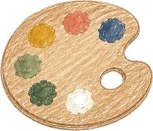
描いて つくってじぶんで考える
油絵・水彩・パステルから、粘土・紙・木工まで。いろいろな材料で、描いて、つくれる教室です
体験レッスンを申し込む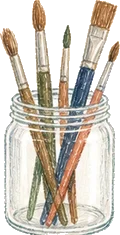
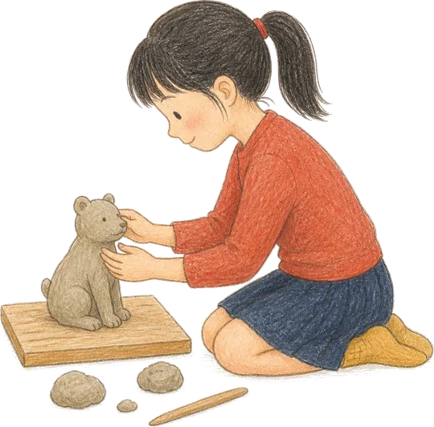
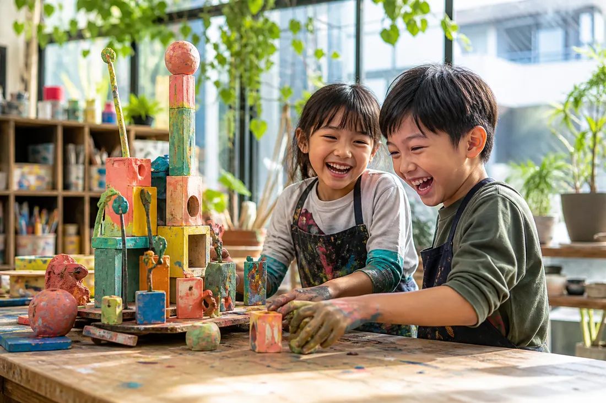
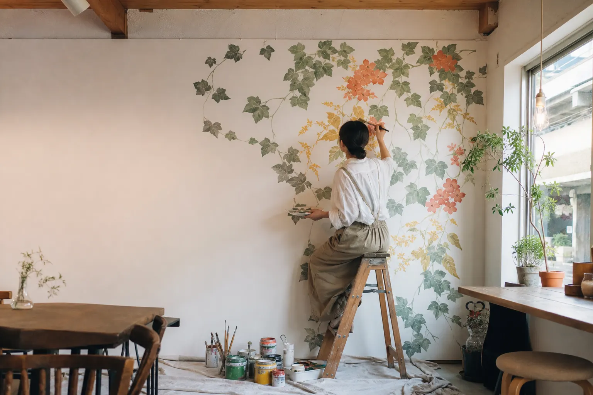
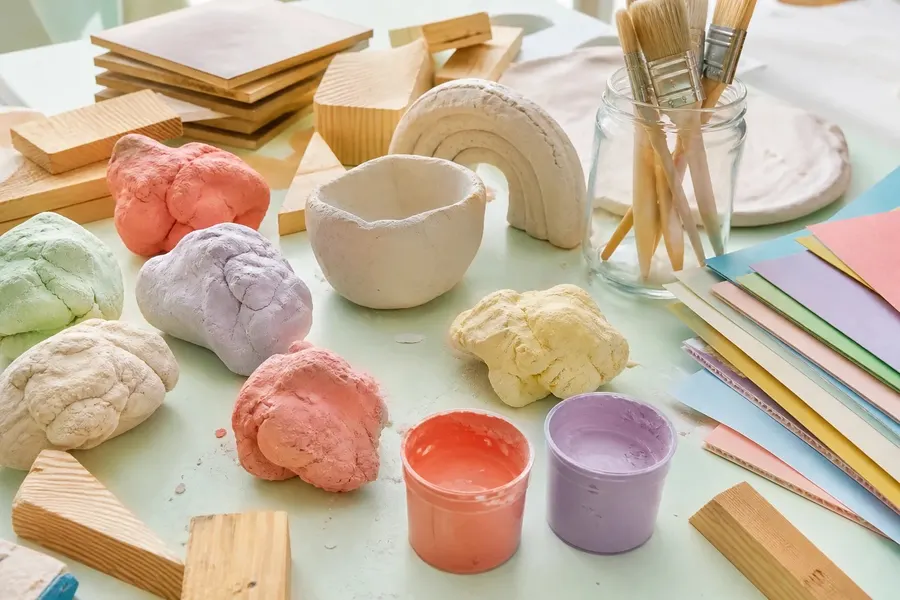
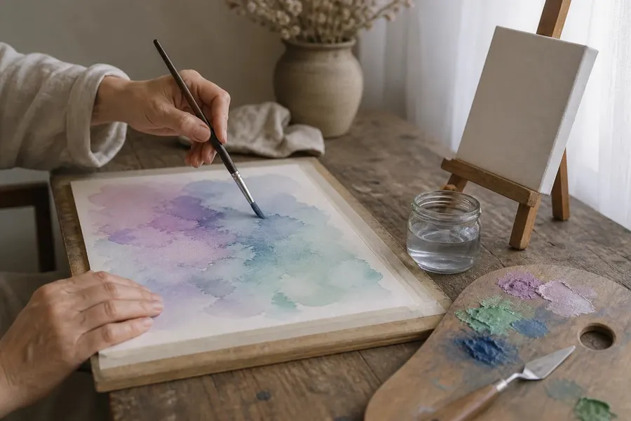
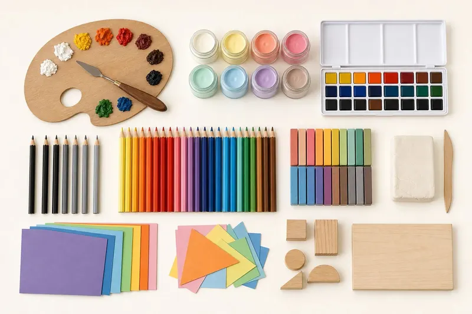
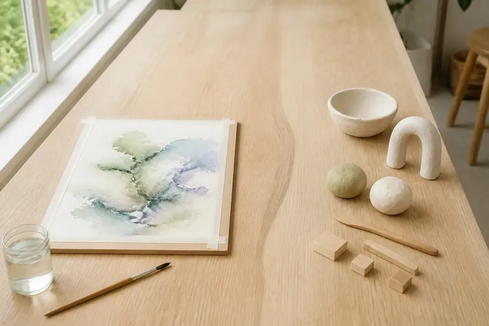
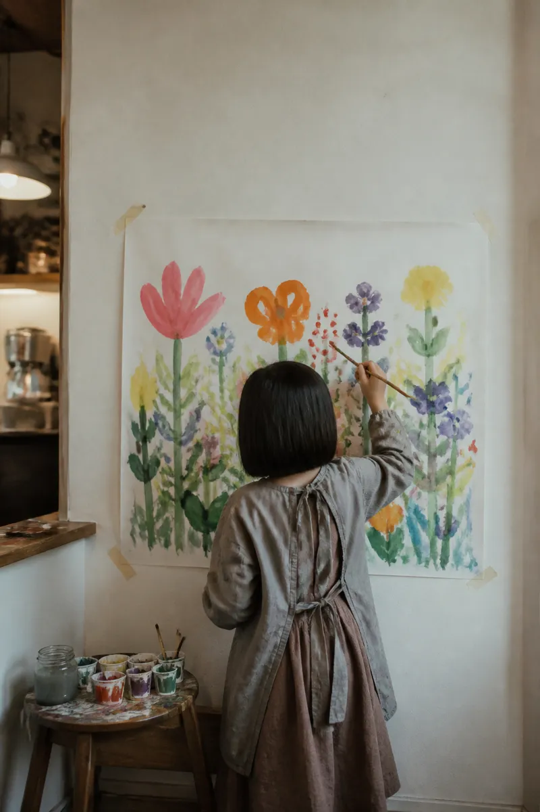
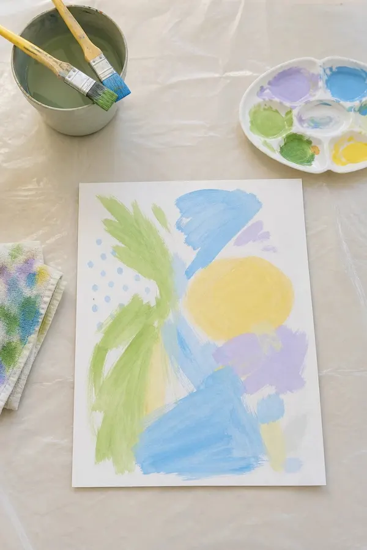
CLASSES
子どもと大人で、
時間を分けています。
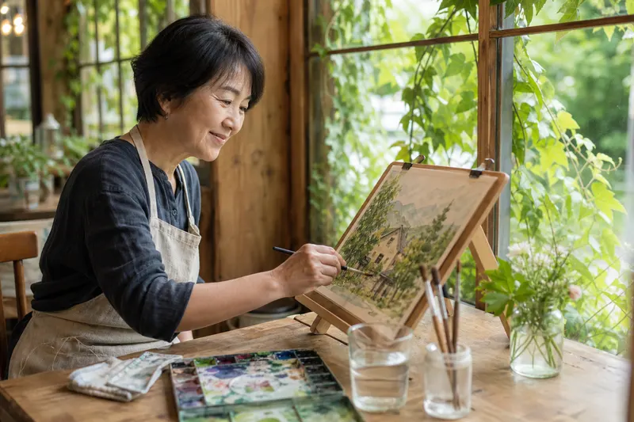
「近くに絵画教室がない」。そんな声を聞いて、横浜市旭区中白根の「古道カフェ ヱンルゥト」で教室をはじめました。学校帰りに、仕事の合間に。月に3回の金曜日、歩いて通える場所で、描いたりつくったりする時間をすごしませんか。
教室の特徴を見るFEATURES
MATERIALS
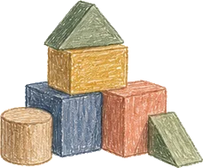
絵の具も、木も、ボードも、粘土も。平面から立体まで、作りたいものに合わせて素材から選びます。
使える材料
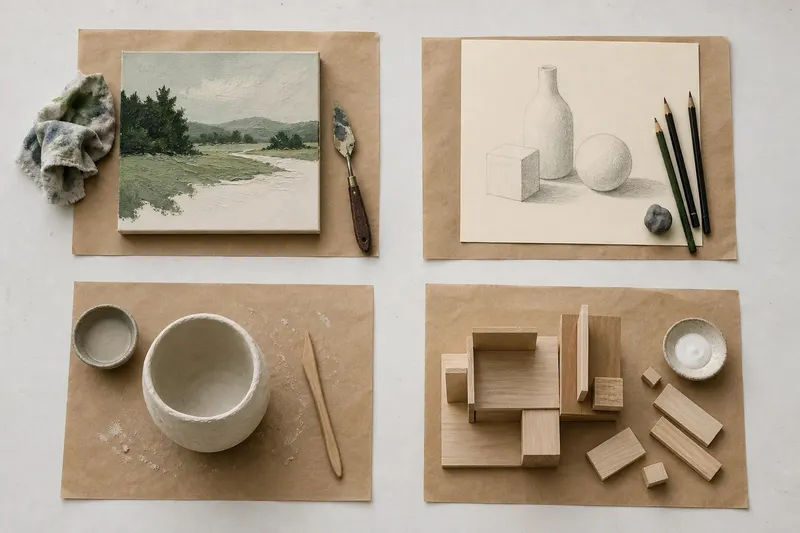
SMALL CLASS
進め方は一人ひとり違っていい。自由課題にも対応し、興味と習熟度に合わせて教えます。
ARTIST
講師は日本画出身の壁画アーティスト。制作の現場の技術を、教室でそのまま伝えます。
WHAT WE GROW
作ることは、考えること。手を動かしながら予測を立て、試して、直す。
その繰り返しが、まだ世の中にないものを生み出す力になります。
どう組めば立つか、どの色を重ねればそう見えるか。手を動かしながら考えます。
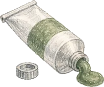
乾いたらどうなるか、削ったらどう変わるか。結果を予想してから手を動かします。
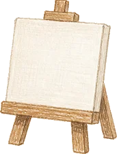
まだどこにもない形を、自分で決めて、最後まで作りきります。
女子美術大学 日本画専攻卒業。トリックアート美術館で壁画・造作の制作に携わったのち独立。現在は関東を中心に、手描き壁画、アートパネル、ミニチュアの制作などを手がけています。世田谷の絵画教室で2年以上講師を務め、個人宅への訪問レッスンも経験しています。日本画の画材など、少し特殊な表現をやってみたい方にも対応します。
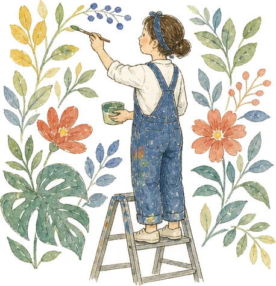
PRICE & TIME
子どもクラス
第1〜第3金曜 16:00〜17:30
月謝6,000円
子どもクラス
第1〜第3金曜 16:00〜17:30
月謝7,500円
大人クラス
第1〜第3金曜 13:30〜15:00
月謝9,000円
第1〜第3金曜の月3回・各90分。画材はスターターセットの販売があります。特殊な画材を使う場合は、別途材料費をいただくことがあります。
Q & A
A大丈夫です。基礎から、一人ひとりのペースに合わせて進めます。
A体験は手ぶらで参加できます。入会後はスターターセット（販売）から始められます。
A【要確認：見学の可否・料金・申込方法】
A【要確認：振替ルール】
ACCESS
体験料：【要確認：体験料】
見学：【要確認：見学の可否】
申込方法：【要確認：申込方法】
体験は手ぶらで参加できます。
InstagramのDMで相談する
ご質問や見学の相談に。
【要確認：DMでの受付と返信する人】